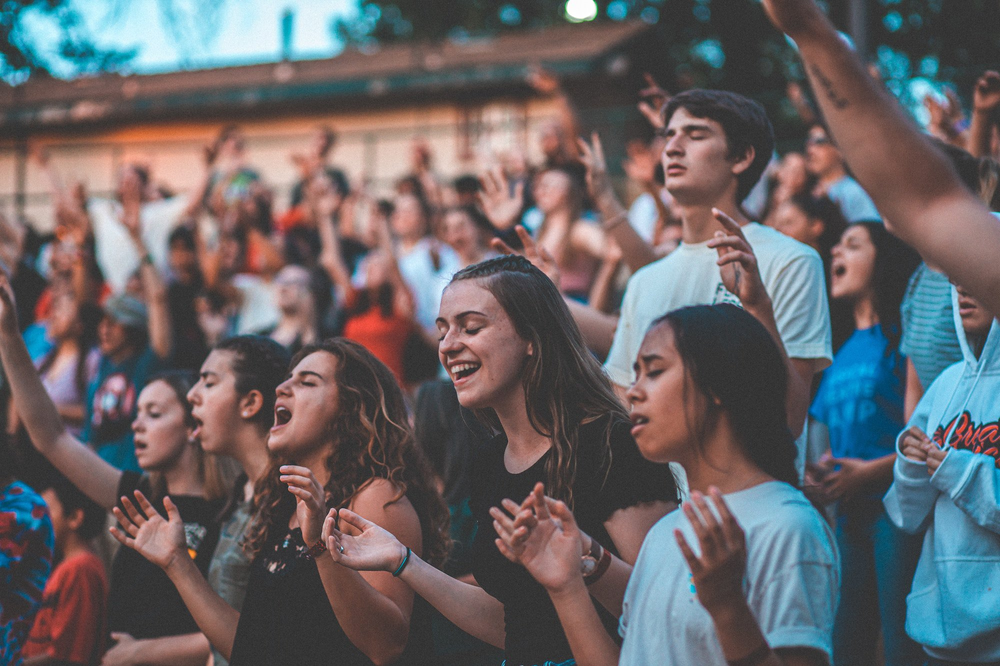
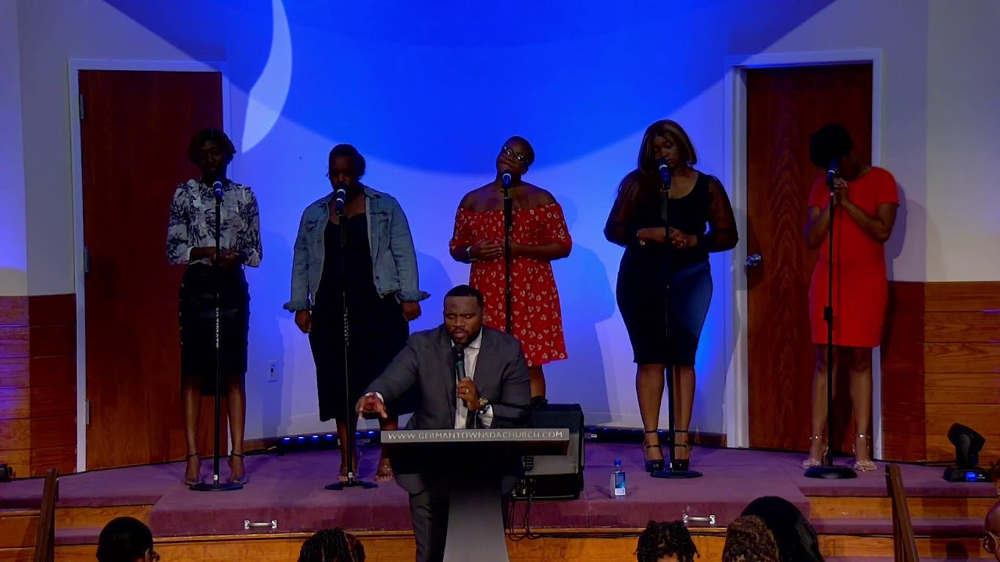
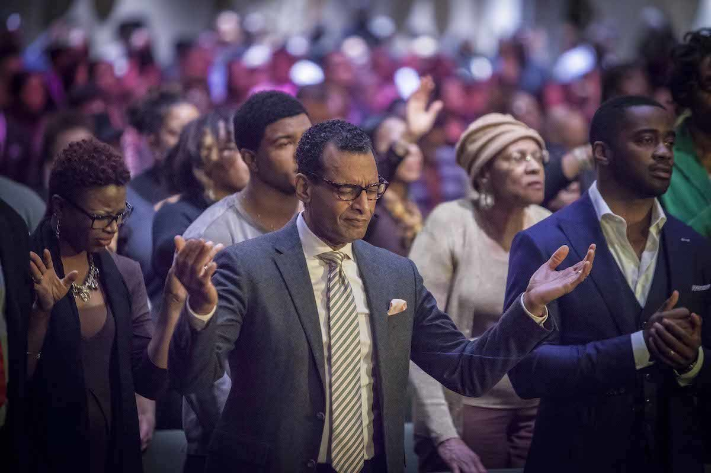

Arise, shine, for your light has come, and the glory of the Lord rises upon you. Isaiah 60:1
The Lord calls us to walk in His light and to bring hope to every corner of our lives. Let His glory guide your path, strengthen your faith, and fill your heart with peace. Join us in worship, prayer, and fellowship as we shine His light together in our community.

Our youth ministry empowers teenagers to grow spiritually, socially, and emotionally. We provide a safe space where young people can learn about God’s Word, develop leadership skills, and build meaningful friendships. Activities include Bible study, mentorship programs, community service, and youth worship sessions. Teens are encouraged to express their creativity and talents while serving in church events. We believe in nurturing their faith early so that they become strong, confident leaders in the church and the community. Our youth ministry also addresses real-life challenges and equips them with tools to make godly decisions. Above all, it is a place where they feel valued, loved, and connected to God.
The children’s ministry nurtures young hearts through interactive Bible lessons, songs, and creative activities. Children are guided to understand God’s love and principles from an early age. Volunteers ensure each child feels safe, supported, and encouraged. Activities include arts, crafts, storytelling, and worship tailored to different age groups. We also teach moral values, respect, and integrity, forming a strong spiritual foundation. Parents are involved and supported as we guide children together in faith. Our ministry celebrates milestones and achievements while helping children grow in confidence and relationship with God.

The worship team leads our congregation in meaningful praise and worship. Members are trained in music, vocals, and stage presence to create an atmosphere of worship. Rehearsals and workshops enhance skills and creativity, ensuring each service is uplifting. The team works closely with pastors and media for seamless worship experiences. Beyond Sunday services, members participate in worship nights and community events. Each team member grows spiritually while serving, fostering unity and passion for God. The worship team inspires the congregation to connect deeply with God through music and devotion.
The prayer ministry intercedes for the church, congregation, and wider community. Members meet regularly for prayer meetings and one-on-one intercession. We offer support, guidance, and spiritual strength to those in need. The ministry encourages members to develop personal prayer lives and spiritual discipline. We pray for church programs, outreach events, and community needs. Through dedicated intercession, we foster unity, faith, and resilience. The ministry is a cornerstone of our church, bringing comfort, hope, and transformation through prayer.

The outreach ministry extends God’s love to our community through service and evangelism. Members organize charitable programs, educational support, and service projects. Volunteers help those in need while sharing the Gospel in practical ways. Outreach activities encourage compassion, humility, and discipleship. We partner with local organizations to maximize impact and reach. Every activity emphasizes serving others with love and faith. This ministry inspires hope, transformation, and spiritual growth in both members and recipients of our services.
The media team manages the church’s digital presence, including livestreams, recordings, and social media. Members learn technical skills in video, audio, and graphic production. The team collaborates with pastors and ministries to highlight programs and events effectively. Beyond technical tasks, the team shares the Gospel with a wider audience online. Creativity, innovation, and dedication are encouraged in every project. Members grow both spiritually and professionally while serving. The media team ensures the church reaches more people with quality, engaging content that glorifies God.